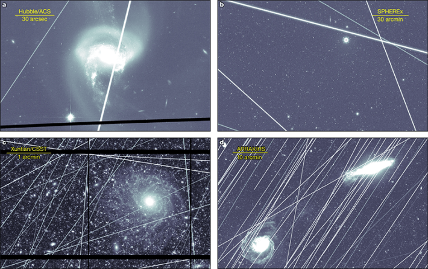

The space around Earth is aswarm with satellites. Recently, the dangers of overcrowding the area lower than 1,200 miles overhead—so-called low Earth orbit (LEO)—have emerged. For example, collisions threaten to destroy valuable tech and sometimes rain space junk down on our planet.
Scientists have started sounding another alarm regarding the throng of satellites that encircles us: They’re now messing up astronomical images taken by ground and by space telescopes designed to image the deep cosmos.
According to NASA researchers, if humanity continues to launch orbital satellites into low Earth orbit, or LEO, at the projected pace—satellite launches are slated to increase by two orders of magnitude—over the next decade, more than one in three of the images taken by the Hubble Space Telescope will be contaminated by satellite trails.

OBSTRUCTED SEATING: These simulated images show Hubble (a), SPHEREx (b), Xuntian (c) and ARRAKIHS (d) space observatories. The lines represent the anticipated effects of the satellites planned to be operational by 2040. Images from Borlaff, A.S., et al. Nature (2025).
And the news is even worse for other space telescopes, such as NASA’s SPHEREx (Spectro-Photometer for the History of the Universe, Epoch of Reionization and Ices Explorer), and the soon to launch European Space Agency ARRAKIHS (Analysis of Resolved Remnants of Accreted galaxies as a Key Instrument for Halo Surveys) and Chinese Xuntian space telescopes. More than 96 percent of images captured by those orbiting observatories could be marred by satellite traffic.
Read more: “The Weirdest Stuff We’ve Sent Into Orbit”
Publishing their results in this week’s issue of Nature, the authors offer solutions to the problem, without sacrificing the boom in satellite operations by telecommunications companies. “We propose a series of mitigation measures that can be applied to prevent, avoid, and correct the unwanted effects of satellite trails in space telescopes, enabling responsible use of LEO for both science and industry,” they write. These include limiting the upper orbital range of large satellite constellations to keep them out of frame for space telescopes, carefully tracking and planning satellite orbital paths, and maintaining precise paths for the telescopes themselves such that they can avoid the satellite swarms, among other strategies.
If these floating observatories are to capture images that help humanity demystify the universe, we must be smarter about how we exploit LEO so that satellites steer clear of the cosmic snapshots. 
Enjoying Nautilus? Subscribe to our free newsletter.
Lead image: Nature(Nature)